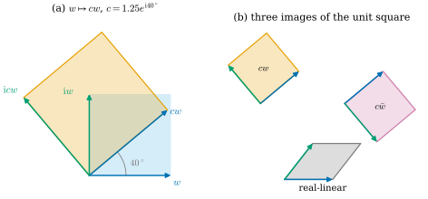
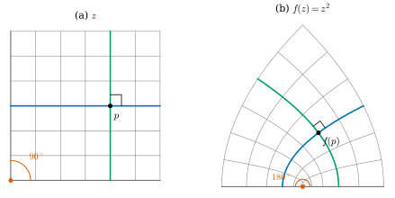
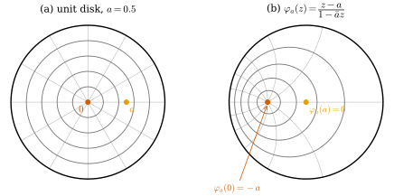

43.2 Complex Numbers and the Cauchy–Riemann Equations
Goals
- 복소수의 곱셈을 rotation과 scaling으로 읽고, 평면의 linear map이 complex linear인 것이 “양수배 × rotation”인 것과 같음을 증명할 수 있다.
- holomorphic function과 Cauchy–Riemann equations를 정의하고, \(f' \ne 0\)인 holomorphic function이 orientation을 지키는 conformal map과 같다는 것을 증명할 수 있다.
- 격자 위의 수치 Jacobian으로 Cauchy–Riemann equations의 위반을 재고, 그것이 \(\sigma_1/\sigma_2\)와 어떻게 관계되는지 설명할 수 있다.
- Möbius transformation이 원을 원으로 보낸다는 것을 증명하고, \(\R^n\)(\(n \ge 3\))에서는 conformal map이 Möbius 변환뿐이라는 Liouville theorem의 뜻을 말할 수 있다.
Prerequisites
- (43.1.1), Proposition 43.1.4: conformal map의 조건과 mesh에서의 rigidity
- Proposition 7.4.4: 각을 보존하는 linear map은 양수배 × orthogonal map이다
- Definition 2.1.1: total derivative와 Jacobian, Example 35.5.11: map의 differential \(d\mathbf{x}\)
- Section 11.3: unit sphere에 대한 inversion
Motivation
Section 43.1은 mesh에서 각을 정확히 보존하라는 조건이 너무 강하다는 것을 보였다. 그 대신 각을 얼마나 깨는지 재고 최소화하려면, 먼저 “각을 보존한다”를 계산할 수 있는 식으로 써야 한다. 가장 단순한 경우, 평면의 영역에서 평면으로 가는 map에서 출발하자. 이 경우가 complex analysis의 주제이고, 그 기본 방정식이 Cauchy–Riemann equations다 [CMU-DDG L19–20] slide 26.
열쇠는 한 점에서 보는 것이다. map이 각을 보존하는지는 그 점에서의 differential, 곧 Jacobian matrix가 정한다. 각을 보존하는 \(2 \times 2\) matrix는 rotation에 양수를 곱한 것이고(Proposition 7.4.4), 평면에서 rotation과 scaling을 가장 짧게 쓰는 언어가 복소수의 곱셈이다. 강의 슬라이드도 conformality를 회전과 differential의 교환으로 설명한다 [CMU-DDG L19–20] slides 28, 38–39. 이 절은 그 생각을 정확한 식으로 바꾼다.
Complex Numbers as Rotations and Scalings
\(\R^2\)와 \(\mathbb{C}\)를 \((x, y) \leftrightarrow x + \mathrm{i}y\)로 같게 보자. 덧셈은 vector의 덧셈과 같다. 새로운 것은 곱셈이다. \(\mathrm{i}\)를 곱하면 \(\mathrm{i}(x + \mathrm{i}y) = -y + \mathrm{i}x\)이므로, vector \((x, y)\)가 \((-y, x)\)로, 곧 반시계 방향으로 \(90^\circ\) 돈다. 이것이 Chapter 32의 \(+90^\circ\) 회전 \(J\)다(Notation and Conventions). 두 번 하면 \(180^\circ\) 회전, 곧 \(-1\)을 곱하는 것이므로 \(\mathrm{i}^2 = -1\)이다. 허수 단위를 이렇게 회전으로 읽는 것이 이 장 전체의 출발점이다 [Cr §7.0.1]. 일반적인 \(c \ne 0\)은 polar form \(c = re^{\mathrm{i}\theta}\)(\(r = \abs{c}\), \(e^{\mathrm{i}\theta} = \cos\theta + \mathrm{i}\sin\theta\))로 쓸 수 있고, \(w = \rho e^{\mathrm{i}\vartheta}\)이면 \(cw = r\rho\,e^{\mathrm{i}(\theta + \vartheta)}\)이다. 곧 \(c\)를 곱하는 것은 \(\theta\)만큼 돌리고 \(r\)배 늘이는 것이다 [CMU-DDG L19–20] slides 31–37.
이 관찰을 linear map의 언어로 정리하자. \(T\colon \mathbb{C} \to \mathbb{C}\)가 real-linear라는 것은 \(\R^2\)의 linear map이라는 뜻이다. \(T(\mathrm{i}w) = \mathrm{i}T(w)\)이면, 곧 \(\mathrm{i}\)와 교환하면 \(T\)를 complex linear(복소 선형)라 하고, \(T(\mathrm{i}w) = -\mathrm{i}T(w)\)이면 antilinear(반선형)라 한다.
Lemma 43.2.1 (complex-linear maps of the plane). \(T\colon \mathbb{C} \to \mathbb{C}\)가 real-linear map이라 하자.
(a) 다음은 동치다. (i) \(T\)는 complex linear다. (ii) 어떤 \(c \in \mathbb{C}\)가 있어 모든 \(w\)에서 \(T(w) = cw\)이다. (iii) \(T\)의 행렬(standard basis \(1, \mathrm{i}\))이 \(\begin{pmatrix} a & -b \\ b & a \end{pmatrix}\) 꼴이다. 이때 \(c = T(1) = a + \mathrm{i}b\)다.
(b) \(T\)가 antilinear인 것은 \(T(w) = c\bar w\)인 것, 곧 행렬이 \(\begin{pmatrix} a & b \\ b & -a \end{pmatrix}\)(\(c = a + \mathrm{i}b\)) 꼴인 것과 같다.
(c) 모든 real-linear \(T\)는 \(T(w) = \alpha w + \beta\bar w\)로 유일하게 쓸 수 있고, \(\alpha = \tfrac12\big(T(1) - \mathrm{i}T(\mathrm{i})\big)\), \(\beta = \tfrac12\big(T(1) + \mathrm{i}T(\mathrm{i})\big)\)이다. \(\det T = \abs{\alpha}^2 - \abs{\beta}^2\)이고, \(T\)의 singular value는 \(\abs{\alpha} + \abs{\beta}\)와 \(\big|\abs{\alpha} - \abs{\beta}\big|\)이다.
Proof. (a) (i)⇒(ii): \(w = s + \mathrm{i}t\)(\(s, t \in \R\))이면 real-linearity와 (i)로 \(T(w) = sT(1) + tT(\mathrm{i})\)이고, 이것은 \(sT(1) + t\,\mathrm{i}T(1) = wT(1)\)이다. (ii)⇒(iii): \(T(1) = c = a + \mathrm{i}b\)이고 \(T(\mathrm{i}) = \mathrm{i}c = -b + \mathrm{i}a\)이므로 행렬의 두 열이 \((a, b)\), \((-b, a)\)이다. (iii)⇒(i): 행렬이 그 꼴이면 \(T(\mathrm{i}) = -b + \mathrm{i}a = \mathrm{i}(a + \mathrm{i}b) = \mathrm{i}T(1)\)이고 \[ \begin{aligned} T(\mathrm{i}w) &= T(-t + \mathrm{i}s) = -tT(1) + sT(\mathrm{i}) \\ &= \mathrm{i}\big(sT(1) + tT(\mathrm{i})\big) = \mathrm{i}T(w) \end{aligned} \] 이다(마지막 등호에서 \(T(\mathrm{i}) = \mathrm{i}T(1)\), \(-T(1) = \mathrm{i}T(\mathrm{i})\)를 썼다). (b) \(w \mapsto T(\bar w)\)는 complex linear인 것과 \(T\)가 antilinear인 것이 같으므로(\(\overline{\mathrm{i}w} = -\mathrm{i}\bar w\)) (a)를 쓴다. 행렬은 \(T(1) = c\), \(T(\mathrm{i}) = -\mathrm{i}c = b - \mathrm{i}a\)에서 읽는다. (c) \(\alpha w + \beta\bar w\)는 \(w = 1\)과 \(w = \mathrm{i}\)에서 \(\alpha + \beta\)와 \(\mathrm{i}(\alpha - \beta)\)이므로, 이것이 \(T(1)\), \(T(\mathrm{i})\)와 같을 조건이 바로 주어진 \(\alpha, \beta\)다. real-linear map은 basis의 image로 정해지므로 유일하다. determinant는 (a)와 (b)의 행렬을 더한 \(\begin{pmatrix} a + a' & -b + b' \\ b + b' & a - a' \end{pmatrix}\)(\(\alpha = a + \mathrm{i}b\), \(\beta = a' + \mathrm{i}b'\))에서 \((a^2 + b^2) - (a'^2 + b'^2)\)이다. 마지막으로 \[ \begin{aligned} \abs{T(e^{\mathrm{i}\vartheta})} &= \abs{\alpha e^{\mathrm{i}\vartheta} + \beta e^{-\mathrm{i}\vartheta}} \\ &= \big|\abs{\alpha} + \abs{\beta}e^{\mathrm{i}(\psi - 2\vartheta)}\big| \end{aligned} \] (\(\psi = \arg\beta - \arg\alpha\))이고, 이것의 최댓값과 최솟값이 \(\abs{\alpha} + \abs{\beta}\)와 \(\big|\abs{\alpha} - \abs{\beta}\big|\)이다. singular value는 단위원 위에서 \(\abs{Tw}\)의 최댓값과 최솟값이다.
(a)의 행렬 \(\begin{pmatrix} a & -b \\ b & a \end{pmatrix} = r\begin{pmatrix} \cos\theta & -\sin\theta \\ \sin\theta & \cos\theta \end{pmatrix}\)은 rotation에 양수를 곱한 것이다. 거꾸로 rotation의 양수배는 이 꼴이다. 따라서 complex linear map은 \(T = 0\)이 아니면 정확히 각과 orientation을 보존하는 linear map이다. (b)의 행렬은 그것에 반사를 합성한 것이라 각을 보존하고 orientation을 뒤집는다. (c)는 일반 real-linear map을 이 두 부분으로 나눈다. \(\beta\)가 conformal에서 벗어난 정도이고, \(\abs{\beta} \lt \abs{\alpha}\)이면 \(\sigma_1/\sigma_2 = (\abs{\alpha} + \abs{\beta})/(\abs{\alpha} - \abs{\beta})\)이다. Section 43.4의 conformal energy가 이 \(\beta\)의 크기를 적분한 것이다.
Figure 43.2.1로 확인하자. 왼쪽 (a)에서 하늘색 정사각형은 \(w = 1\)(파랑)과 \(\mathrm{i}w\)(초록)가 펼친다. \(c = 1.25e^{\mathrm{i}40^\circ}\)를 곱하면 정사각형 전체가 \(40^\circ\) 돌고 \(1.25\)배 커져 주황 정사각형이 된다. 초록 화살표 \(\mathrm{i}cw\)는 여전히 파란 화살표 \(cw\)를 \(90^\circ\) 돌린 것이다. 곧 “돌린 뒤 \(c\)를 곱하는 것(\(c(\mathrm{i}w)\))”과 “\(c\)를 곱한 뒤 돌리는 것(\(\mathrm{i}(cw)\))”이 같다. 오른쪽 (b)는 같은 정사각형을 세 linear map으로 옮긴 것이다. complex linear \(cw\)(주황)는 정사각형을 정사각형으로, 파랑에서 초록으로 가는 반시계 방향을 그대로 보낸다. antilinear \(c\bar w\)(자주)도 정사각형을 주지만 초록 화살표가 파랑의 시계 방향에 있다. 셋째 map(회색)은 real-linear일 뿐이라 정사각형이 평행사변형이 되고 직각이 \(52.1^\circ\)가 된다.

Holomorphic Functions and the Cauchy–Riemann Equations
이제 map으로 간다. smooth map \(f\colon U \to \mathbb{C}\)(\(U \subseteq \mathbb{C}\) open)는 점마다 differential \(df_p\)라는 real-linear map을 갖는다(Definition 2.1.1). 각 점에서 \(df_p\)가 complex linear이기를 요구하자. 실수 미분계수를 정의하던 것과 같은 극한으로 말할 수도 있다.
Definition 43.2.2 (holomorphic function). \(U \subseteq \mathbb{C}\)가 open set이고 \(f\colon U \to \mathbb{C}\)가 smooth map(\(\R^2\)의 map으로서)이라 하자. \(z_0 \in U\)에서 극한
가 있으면 \(f\)는 \(z_0\)에서 complex differentiable이라 한다. \(U\)의 모든 점에서 complex differentiable인 \(f\)를 holomorphic function(정칙함수)이라 한다.
극한에서 \(h\)는 \(0\)으로 가는 복소수이고, 어느 방향에서 오든 같은 값이어야 한다. 실수 \(h\)로 오면 \(f_x(z_0)\)이고, 허수 \(h = \mathrm{i}t\)로 오면 \(\tfrac{1}{\mathrm{i}}f_y(z_0) = -\mathrm{i}f_y(z_0)\)이다. 둘이 같다는 조건을 실수부와 허수부로 나누어 쓴 것이 다음 방정식이다.
Definition 43.2.3 (Cauchy–Riemann equations). smooth \(f = u + \mathrm{i}v\colon U \to \mathbb{C}\)에 대하여 system of partial differential equations
을 Cauchy–Riemann equations(코시-리만 방정식)라 한다. 복소수로 한 줄로 쓰면 \(f_y = \mathrm{i}f_x\)다.
마지막 형태는 실수부와 허수부를 비교하면 된다. \(\mathrm{i}f_x = -v_x + \mathrm{i}u_x\)이고 \(f_y = u_y + \mathrm{i}v_y\)이다. 세 가지 말이 같은 것을 뜻한다는 것이 이 절의 기본 명제다.
Proposition 43.2.4 (three forms of complex differentiability). smooth \(f = u + \mathrm{i}v\colon U \to \mathbb{C}\)와 \(z_0 \in U\)에 대하여 다음은 동치다.
(a) \(f\)는 \(z_0\)에서 complex differentiable이다.
(b) \(z_0\)에서 Cauchy–Riemann equations (43.2.2)가 성립한다.
(c) \(df_{z_0}\)는 complex linear다. 곧 모든 \(X \in \mathbb{C}\)에서 \(df_{z_0}(\mathrm{i}X) = \mathrm{i}\,df_{z_0}(X)\)이다.
이때 \(f'(z_0) = f_x(z_0) = u_x + \mathrm{i}v_x\), \(df_{z_0}(X) = f'(z_0)X\)이고 \(\det Df(z_0) = \abs{f'(z_0)}^2\)이다.
Proof idea: smooth한 \(f\)는 real-linear 근사 \(df\)를 갖는다. 그 근사가 complex linear이면 차분몫이 방향에 무관해진다.
Proof. \(f\)가 smooth이므로 differentiable이고, \(f(z_0 + h) = f(z_0) + df_{z_0}(h) + R(h)\), \(R(h)/\abs{h} \to 0\)이다(Definition 2.1.1). (b)⇔(c): \(df_{z_0}(1) = f_x\), \(df_{z_0}(\mathrm{i}) = f_y\)이다(partial derivative의 정의). Lemma 43.2.1(a)의 증명에서 real-linear map이 complex linear인 것은 \(T(\mathrm{i}) = \mathrm{i}T(1)\)인 것과 같으므로, (c)는 \(f_y = \mathrm{i}f_x\), 곧 (b)다. (c)⇒(a): Lemma 43.2.1(a)로 \(df_{z_0}(h) = ch\), \(c = f_x(z_0)\)이다. 그러면 \(\dfrac{f(z_0 + h) - f(z_0)}{h} = c + \dfrac{R(h)}{h}\)이고 \(\abs{R(h)/h} = \abs{R(h)}/\abs{h} \to 0\)이므로 극한이 \(c\)다. (a)⇒(c): 극한을 \(f'(z_0)\)라 하면 \(f(z_0 + h) - f(z_0) - f'(z_0)h = o(\abs{h})\)이다. total derivative는 유일하므로(\(o(\abs{h})\)로 근사하는 linear map은 하나뿐이다) \(df_{z_0}(h) = f'(z_0)h\)이고, 이것은 complex linear다. 마지막 문장: \(f'(z_0) = df_{z_0}(1) = f_x(z_0)\)이고, Lemma 43.2.1(a)의 행렬 \(\begin{pmatrix} u_x & -v_x \\ v_x & u_x \end{pmatrix}\)의 determinant는 \(u_x^2 + v_x^2 = \abs{f'}^2\)이다.
(c)가 이 장에서 가장 많이 쓸 형태다. differential을 \(\mathbb{C}\)-valued 1-form \(df = f_x\,dx + f_y\,dy\)로 보면, Cauchy–Riemann equations는 \(df = f'\,(dx + \mathrm{i}\,dy) = f'\,dz\)로 쓸 수 있다. \(dz = dx + \mathrm{i}\,dy\)는 항등 map \(z\)의 differential이다. 곧 holomorphic function의 differential은 \(dz\)의 복소수배다. 강의 슬라이드는 같은 조건을 “모든 복소수 \(c\)에 대해 \(df(cX) = c\,df(X)\)”로 적는다 [CMU-DDG L19–20] slides 39, 41. 그리고 이것을 실수 \(c\)에만 요구하면 모든 differentiable map이 만족하므로 각에 대해 아무것도 말하지 않는다는 점을 강조한다(slide 42).
Example 43.2.5 (polynomials, the exponential, and 1/z). (a) \(f(z) = z^2 = (x^2 - y^2) + \mathrm{i}\,2xy\)이면 \(u_x = 2x = v_y\), \(u_y = -2y = -v_x\)이고 \(f' = u_x + \mathrm{i}v_x = 2x + 2\mathrm{i}y = 2z\)다. 일반적으로 polynomial은 holomorphic이고 \((z^n)' = nz^{n-1}\)이다(곱의 극한 법칙이 실수와 같은 꼴로 성립한다). (b) \(f(z) = e^z := e^x(\cos y + \mathrm{i}\sin y)\)이면 \(u = e^x\cos y\), \(v = e^x\sin y\)이고 \(u_x = e^x\cos y = v_y\), \(u_y = -e^x\sin y = -v_x\)다. \(f' = e^x\cos y + \mathrm{i}e^x\sin y = e^z\)이고 결코 \(0\)이 아니다. 이 map이 Example 7.4.2(c)의 exponential map이다. (c) \(f(z) = 1/z\)(\(z \ne 0\))는 \(\dfrac{1}{z + h} - \dfrac1z = \dfrac{-h}{z(z + h)}\)이므로 \(f'(z) = -1/z^2\)이다. 실수부와 허수부 \(u = x/(x^2 + y^2)\), \(v = -y/(x^2 + y^2)\)로 (43.2.2)를 직접 확인할 수도 있다(Exercise 43.2.1).
Verification: verify/v-43-2-cauchy-riemann.py
Non-example 43.2.6 (conjugation and its relatives). (a) \(f(z) = \bar z = x - \mathrm{i}y\)는 \(u_x = 1\), \(v_y = -1\)이라 어디서도 Cauchy–Riemann이 아니다. 차분몫 \(\bar h/h\)는 실수 방향에서 \(1\), 허수 방향에서 \(-1\)이다. 그러나 \(df(X) = \bar X\)는 antilinear이므로 각의 크기는 보존하고 orientation을 뒤집는다(반사). (b) \(f(z) = z + \varepsilon\bar z\)(\(0 \lt \varepsilon \lt 1\))는 Lemma 43.2.1(c)에서 \(\alpha = 1\), \(\beta = \varepsilon\)인 linear map이다. Cauchy–Riemann이 성립하지 않고(\(f_y - \mathrm{i}f_x = -2\mathrm{i}\varepsilon\)), \(\sigma_1/\sigma_2 = (1 + \varepsilon)/(1 - \varepsilon)\)이 어디서나 같다. \(\varepsilon = 0.3\)이면 \(1.857\)이다. (c) \(f(z) = \abs{z}^2 = x^2 + y^2\)는 \(v = 0\)이므로 Cauchy–Riemann이 \(u_x = u_y = 0\), 곧 \(z = 0\)에서만 성립한다. 한 점에서만 complex differentiable한 함수는 holomorphic이 아니다(정의는 open set의 모든 점에서 요구한다).
이제 이 절의 목적인 conformal map과의 관계를 증명하자. 평면의 open set은 \(z = 0\) 평면 위의 regular surface이므로 Definition 7.4.1의 local conformal map을 그대로 쓸 수 있다. \(\bar f\)가 holomorphic인 \(f\)를 antiholomorphic(반정칙)이라 한다.
Proposition 43.2.7 (holomorphic means conformal). \(U \subseteq \mathbb{C}\)가 open set이고 \(f\colon U \to \mathbb{C}\)가 smooth라 하자.
(a) \(f\)가 holomorphic이고 모든 점에서 \(f' \ne 0\)인 것은 \(f\)가 orientation을 지키는(\(\det Df \gt 0\)) local conformal map인 것과 같다. 이때 길이 배율은 \(e^{\mu} = \abs{f'}\)이다.
(b) \(f\)가 antiholomorphic이고 \(\bar f\,' \ne 0\)인 것은 \(f\)가 orientation을 뒤집는(\(\det Df \lt 0\)) local conformal map인 것과 같다.
Proof. (a) (⇒): Proposition 43.2.4로 \(df_p(X) = f'(p)X\)이므로 \(\abs{df_p(X)} = \abs{f'(p)}\abs{X}\)이고, 편극(\(\inner{X}{Y} = \tfrac14(\abs{X + Y}^2 - \abs{X - Y}^2)\))으로 \(\inner{df_p(X)}{df_p(Y)} = \abs{f'(p)}^2\inner{X}{Y}\)이다. \(\abs{f'}\)는 smooth \(f_x\)의 크기이고 양수이므로 smooth이다. 곧 (43.1.1)이 \(e^{\mu} = \abs{f'}\)로 성립한다. \(\det Df = \abs{f'}^2 \gt 0\)이다. (⇐): local conformal이면 각 점에서 \(df_p\)는 각을 보존하는 injective linear map이므로 Proposition 7.4.4로 \(Df(p) = c\,Q\)(\(c \gt 0\), \(Q\)는 orthogonal)이다. \(\det Df \gt 0\)이므로 \(\det Q = 1\)이고, \(2 \times 2\) orthogonal matrix 중 determinant가 \(1\)인 것은 rotation \(\begin{pmatrix} \cos\theta & -\sin\theta \\ \sin\theta & \cos\theta \end{pmatrix}\)뿐이다. 따라서 \(Df(p)\)는 Lemma 43.2.1(a)(iii)의 꼴이라 \(df_p\)가 complex linear이고, Proposition 43.2.4로 \(f\)는 \(p\)에서 complex differentiable이며 \(f'(p) = df_p(1) \ne 0\)이다. (b) \(\bar f\)의 differential은 \(df\)에 켤레(반사)를 합성한 것이다. 반사는 각의 크기를 보존하고 orientation을 뒤집으므로, \(f\)가 orientation을 뒤집는 local conformal map인 것은 \(\bar f\)가 orientation을 지키는 local conformal map인 것과 같고, (a)를 \(\bar f\)에 쓰면 된다.
“각을 보존한다”는 기하적 조건이 이렇게 linear partial differential equation이 되었다. 이것이 계산에서 결정적이다. Cauchy–Riemann equations는 \(f\)에 대해 linear이므로, 그 위반을 제곱해서 더한 양은 \(f\)의 2차식이고 그 최소화는 linear system가 된다(Section 43.5). 조건 \(f' \ne 0\)은 빼놓을 수 없다. 다음 예가 그 이유다.
Non-example 43.2.8 (\(z^2\) at the origin). \(f(z) = z^2\)은 holomorphic이지만 \(f'(0) = 0\)이다. 원점에서 나가는 두 반직선 \(\{te^{\mathrm{i}\vartheta_1}\}\), \(\{te^{\mathrm{i}\vartheta_2}\}\)(\(t \gt 0\))은 \(\{t^2e^{2\mathrm{i}\vartheta_1}\}\), \(\{t^2e^{2\mathrm{i}\vartheta_2}\}\)으로 가므로 사이의 각이 두 배가 된다. 그래서 \(z^2\)은 \(0\)에서 conformal이 아니다. 원점이 아닌 점에서는 \(f' = 2z \ne 0\)이라 conformal이다.
Figure 43.2.2에서 두 행동을 함께 본다. 왼쪽 (a)는 정사각형 \([0, 1.2]^2\)의 격자이고, 점 \(p = 0.8 + 0.6\mathrm{i}\)를 지나는 두 격자선(파랑과 초록)과 모서리 \(0\)(주홍)이 표시되어 있다. 오른쪽 (b)의 \(z^2\)에서 격자선은 포물선이 되지만, \(f(p) = 0.28 + 0.96\mathrm{i}\)에서 파랑과 초록 포물선은 여전히 직각으로 만나고 모든 회색 격자선끼리도 그렇다. 반면 모서리의 두 변은 양의 실수축과 음의 실수축이 되어 \(90^\circ\)가 \(180^\circ\)로 펴진다. 정사각형 전체가 half-disk 모양이 되는 것은 이 한 점 때문이다.

Remark 43.2.9 (smoothness for free, and Wirtinger derivatives). (a) Definition 43.2.2는 \(f\)가 smooth라고 미리 가정했다. complex analysis에서는 이 가정 없이 open set의 모든 점에서 complex differentiable이기만 하면 holomorphic이라 하고, 그러면 \(f\)는 저절로 \(C^\infty\)이고 power series로 전개된다(Goursat theorem과 Cauchy integral formula. 진술만 한다). 각을 보존한다는 조건이 이렇게 강한 regularity을 준다는 것이 Remark 43.1.2(a)의 뜻이다 [CMU-DDG L19–20] slide 12. (b) \(\partial_z f := \tfrac12(f_x - \mathrm{i}f_y)\), \(\partial_{\bar z}f := \tfrac12(f_x + \mathrm{i}f_y)\)로 두면 \(df = \partial_zf\,dz + \partial_{\bar z}f\,d\bar z\)이다(\(dz = dx + \mathrm{i}dy\), \(d\bar z = dx - \mathrm{i}dy\)를 넣어 \(dx\), \(dy\)의 coefficient를 비교한다). 이것이 Lemma 43.2.1(c)의 분해 \(\alpha = \partial_zf\), \(\beta = \partial_{\bar z}f\)이고, Cauchy–Riemann equations는 \(\partial_{\bar z}f = 0\)이다. 강의 슬라이드도 이 형태를 함께 적는다 [CMU-DDG L19–20] slide 41. 또 \(f_y - \mathrm{i}f_x = -2\mathrm{i}\,\partial_{\bar z}f\)이므로 아래 Implementation 상자의 잔차는 \(2\abs{\partial_{\bar z}f}\)다.
Möbius Transformations
holomorphic function 가운데 특히 단순하고 대칭이 큰 족이 있다. 원을 원으로 보내는 변환이다 [CMU-DDG L19–20] slides 43–44. 이 절에서 “원”은 원 또는 직선(무한히 큰 원)을 뜻하고, 둘을 함께 generalized circle(일반화된 원)이라 부른다. 실수 \(\alpha, \gamma\)와 복소수 \(\beta\)가 \(\abs{\beta}^2 \gt \alpha\gamma\)를 만족할 때 집합
은 \(\alpha \ne 0\)이면 중심 \(-\beta/\alpha\), 반지름 \(\sqrt{\abs{\beta}^2 - \alpha\gamma}/\abs{\alpha}\)인 원이고(양변을 \(\alpha\)로 나누어 \(\abs{z + \beta/\alpha}^2 = (\abs{\beta}^2 - \alpha\gamma)/\alpha^2\)로 정리한다), \(\alpha = 0\)이면 직선이다. 모든 원과 직선은 이 꼴로 쓸 수 있다.
Definition 43.2.10 (Möbius transformation). 복소수 \(a, b, c, d\)가 \(ad - bc \ne 0\)을 만족할 때
를 Möbius transformation(뫼비우스 변환)이라 한다. \(c \ne 0\)이면 \(f\)는 \(\mathbb{C}\setminus\{-d/c\}\)에서 정의되고, \(f(-d/c) = \infty\), \(f(\infty) = a/c\)로 정해 \(\mathbb{C}\cup\{\infty\}\)에서 \(\mathbb{C}\cup\{\infty\}\)로 가는 bijection으로 본다(\(c = 0\)이면 \(f(\infty) = \infty\)).
조건 \(ad - bc \ne 0\)이 없으면 \(az + b\)와 \(cz + d\)가 비례해서 \(f\)가 상수가 된다. 그것은 변환이 아니다. 예: \(az + b\)(\(c = 0\), similarity)와 \(1/z\)가 Möbius transformation이고, unit disk의 \(\varphi_a(z) = (z - a)/(1 - \bar az)\)(\(\abs{a} \lt 1\))도 그렇다(\(ad - bc = 1 - \abs{a}^2 \ne 0\)).
Proposition 43.2.11 (Möbius transformations are conformal and preserve circles). (43.2.4)의 \(f\)에 대하여
(a) \(f\)는 정의역에서 holomorphic이고 \(f'(z) = (ad - bc)/(cz + d)^2 \ne 0\)이다. 따라서 orientation을 지키는 local conformal map이다.
(b) \(f\)는 similarity \(z \mapsto pz + q\)와 \(z \mapsto 1/z\)의 합성이다.
(c) \(f\)는 generalized circle을 generalized circle로 보낸다(정의역 밖의 점 \(-d/c\)는 \(\infty\)로 보내고, \(\infty\)를 지나는 것을 직선으로 본다).
Proof. (a) 몫의 미분 법칙(실수와 같은 극한 계산)으로 \(f' = \dfrac{a(cz + d) - c(az + b)}{(cz + d)^2} = \dfrac{ad - bc}{(cz + d)^2}\)이고, Proposition 43.2.7(a)를 쓴다. (b) \(c = 0\)이면 \(f(z) = (a/d)z + b/d\)로 similarity다(\(ad \ne 0\)). \(c \ne 0\)이면 \(f(z) = \dfrac{a}{c} - \dfrac{ad - bc}{c}\cdot\dfrac{1}{cz + d}\)이므로 \(z \mapsto cz + d\), \(w \mapsto 1/w\), \(w \mapsto \tfrac{a}{c} - \tfrac{ad - bc}{c}w\)의 합성이다. 등식은 오른쪽을 통분하면 확인된다. (c) (b)에 따라 두 종류만 보면 된다. similarity \(z = (w - q)/p\)를 (43.2.3)에 넣으면 \(\tfrac{\alpha}{\abs{p}^2}\abs{w - q}^2 + 2\operatorname{Re}\big(\bar\beta(w - q)/p\big) + \gamma = 0\)이고, 전개하면 다시 (43.2.3)의 꼴이다(\(\alpha\)가 \(0\)인지 아닌지는 바뀌지 않는다). \(w = 1/z\)이면 \(z = 1/w\)를 넣고 \(\abs{w}^2\)를 곱해 \(\alpha + 2\operatorname{Re}(\bar\beta\bar w) + \gamma\abs{w}^2 = 0\)을 얻는다(\(\operatorname{Re}(\bar\beta/w)\abs{w}^2 = \operatorname{Re}(\bar\beta\bar w)\)). \(\operatorname{Re}(\bar\beta\bar w) = \operatorname{Re}(\beta w) = \operatorname{Re}(\overline{\bar\beta}\,w)\)이므로 이것은 \((\alpha', \beta', \gamma') = (\gamma, \bar\beta, \alpha)\)인 (43.2.3)이고, \(\abs{\beta'}^2 - \alpha'\gamma' = \abs{\beta}^2 - \alpha\gamma \gt 0\)이다. \(\gamma = 0\)(원래 원이 \(0\)을 지남)이면 image는 직선이고, \(\alpha = 0\)(원래 직선)이면 image는 \(0\)을 지나는 원이다.
Example 43.2.12 (a Möbius map of the disk onto itself). \(\abs{a} \lt 1\)이면 \(\varphi_a(z) = (z - a)/(1 - \bar az)\)는 unit circle을 자기 자신으로 보낸다. \(\abs{z} = 1\)이면 \(\abs{1 - \bar az} = \abs{\bar z}\,\abs{1 - \bar az} = \abs{\bar z - \bar a} = \abs{z - a}\)이기 때문이다. \(\varphi_a(a) = 0\)이므로 unit disk의 안쪽은 안쪽으로 가고, \(\varphi_a\)의 inverse가 \(\varphi_{-a}\)(직접 대입해 확인한다)라서 disk에서 disk 위로 가는 conformal diffeomorphism이다. 실수 \(a\)이면 원 \(\abs{z} = r\)의 image는 중심 \(-a(1 - r^2)/(1 - a^2r^2)\), 반지름 \(r(1 - a^2)/(1 - a^2r^2)\)인 원이다(Proposition 43.2.11(c)의 증명의 계산을 따라가면 된다. verify로 확인했다). \(a = 0.5\), \(r = 0.4\)이면 중심 \(-0.4375\), 반지름 \(0.3125\)이다.
Verification: verify/v-43-2-cauchy-riemann.py
Figure 43.2.3을 보자. 왼쪽 (a)는 unit disk의 polar grid다. 동심원과 반지름이 직각으로 만나고, 주황 점이 \(a = 0.5\)이다. 오른쪽 (b)는 \(\varphi_a\)의 image다. 바깥 원(검정)은 그대로 unit circle이고, 주황 점은 중심 \(0\)으로 왔다. 동심원은 왼쪽으로 몰린 원이 되었고, 반지름은 \(\varphi_a(0) = -0.5\)(주홍)에서 나가는 원호가 되었다. 모양이 크게 바뀌었는데도 두 족은 모든 교점에서 여전히 직각으로 만나고, 원은 원으로 남았다. 이 그림이 Section 43.3의 Riemann mapping theorem에서 말할 “disk로 가는 conformal map은 하나가 아니다”의 구체적인 예다. \(\varphi_a\)를 합성해도 여전히 disk 위로 가는 conformal map이기 때문이다.

차원을 올리면 상황이 완전히 달라진다. \(\R^n\)에는 복소수의 곱셈이 없지만 원을 원으로 보내는 inversion은 있다. Section 11.3은 unit sphere에 대한 inversion을 stereographic projection 두 개의 관계로 정의했다(Section 11.3).
Proposition 43.2.13 (inversion in a sphere). \(n \ge 2\)이고 \(I\colon \R^n\setminus\{0\} \to \R^n\setminus\{0\}\), \(I(x) = x/\abs{x}^2\)이라 하자. 그러면
이고, 괄호 안은 \(x\)에 수직인 hyperplane에 대한 반사다. 따라서 \(I\)는 길이 배율 \(1/\abs{x}^2\)인 conformal diffeomorphism이고 orientation을 뒤집는다(\(I \circ I = \id\)). \(n = 2\)이면 \(I(z) = z/\abs{z}^2 = 1/\bar z\)이고, \(1/z = \overline{I(z)}\)다.
Proof. \(\partial_j\big(x^i/\abs{x}^2\big) = \delta_{ij}/\abs{x}^2 - 2x^ix^j/\abs{x}^4\)이므로 (43.2.5)가 나온다. \(P = I_n - 2\hat x\hat x^{\mathsf T}\)(\(\hat x = x/\abs{x}\))는 \(P\hat x = -\hat x\)이고 \(\hat x\)에 수직인 vector를 그대로 두므로 반사이며, \(P^{\mathsf T}P = I_n\), \(\det P = -1\)이다. 그러면 \(DI^{\mathsf T}DI = \abs{x}^{-4}I_n\)이므로 (43.1.1)이 \(e^{\mu} = 1/\abs{x}^2\)로 성립하고, \(\det DI \lt 0\)이다. \(I(I(x)) = (x/\abs{x}^2)/\abs{x}^{-2} = x\)이므로 \(I\)는 자기 자신이 inverse인 diffeomorphism이다. \(n = 2\)에서 \(z/\abs{z}^2 = z/(z\bar z) = 1/\bar z\)이다.
평면에서 Möbius transformation은 similarity와 \(1/z = \overline{I(z)}\)의 합성이었다(Proposition 43.2.11(b)). \(\R^n\)에서도 similarity와 inversion을 합성한 것을 Möbius transformation이라 부르고, 이것들은 sphere를 sphere로 보내는 conformal map이다(Proposition 43.2.11(c)의 증명을 \(\alpha\abs{x}^2 + 2\inner{\beta}{x} + \gamma = 0\)(\(\beta \in \R^n\))으로 옮기면 된다. inversion은 \((\alpha, \beta, \gamma)\)를 \((\gamma, \beta, \alpha)\)로 바꾼다). 평면과 결정적으로 다른 것은 그것뿐이라는 점이다.
Theorem 43.2.14 (Liouville). \(n \ge 3\)이고 \(U \subseteq \R^n\)이 connected open set이라 하자. smooth map \(f\colon U \to \R^n\)이 모든 점에서 (43.1.1)을 만족하면(local conformal map), \(f\)는 similarity와 inversion을 유한 번 합성한 Möbius transformation의 \(U\)로의 제한이다.
이 정리는 진술만 한다. 증명은 conformal factor가 만족하는 second-order partial differential equation을 푸는 것으로, 이 study set의 범위 밖이다. 뜻은 분명하다. \(\R^3\)에서 conformal map은 유한 개의 parameter(similarity와 inversion을 모두 세면 10개)로 정해지는 족뿐이다. 반면 평면에서는 \(f' \ne 0\)인 모든 holomorphic function, 예를 들어 모든 polynomial이 local conformal map이므로 족이 무한 차원이다. 강의 슬라이드도 이 대비를 강조한다 [CMU-DDG L19–20] slide 24. 이 장이 2차원, 곧 surface에 집중하는 이유가 이것이다. surface에는 conformal map이 넉넉히 있어서 원하는 모양으로 펼 수 있다.
Summary
- 복소수 \(c = re^{\mathrm{i}\theta}\)를 곱하는 것은 \(\theta\) 회전과 \(r\)배 scaling이다. real-linear map이 complex linear인 것은 행렬이 \(\begin{pmatrix} a & -b \\ b & a \end{pmatrix}\)인 것이고, 모든 real-linear map은 \(\alpha w + \beta\bar w\)로 나뉜다(Lemma 43.2.1).
- holomorphic function은 complex differentiable한 함수이고, 이것은 Cauchy–Riemann equations \(u_x = v_y\), \(u_y = -v_x\), 곧 \(df(\mathrm{i}X) = \mathrm{i}\,df(X)\)와 같다(Definition 43.2.2, Definition 43.2.3, Proposition 43.2.4).
- \(f' \ne 0\)인 holomorphic function은 orientation을 지키는 local conformal map과 같고, antiholomorphic은 orientation을 뒤집는다(Proposition 43.2.7). \(f' = 0\)인 점에서는 각이 배가 된다(Non-example 43.2.8).
- Möbius transformation \((az + b)/(cz + d)\)은 conformal이고 원을 원으로 보낸다(Proposition 43.2.11). \(\R^n\)(\(n \ge 3\))의 conformal map은 Möbius transformation뿐이다(Theorem 43.2.14).
다음 절에서는 평면 대신 surface에서 출발한다. surface의 tangent plane에는 복소수가 없지만 \(\mathbf{N}\times\)라는 \(90^\circ\) 회전이 있다. 그것으로 surface에서 평면으로 가는 holomorphic map을 정의하고, 각만 아는 surface, 곧 Riemann surface와 uniformization theorem으로 간다.
Exercises
Exercise 43.2.1 ★ 다음 함수의 실수부와 허수부를 쓰고 Cauchy–Riemann equations가 성립하는 점을 모두 구하여라. (a) \(1/z\)(\(z \ne 0\)) (b) \(z^3\) (c) \(\operatorname{Re}z\) (d) \(e^{\bar z}\)
Solution
(a) \(u = x/(x^2 + y^2)\), \(v = -y/(x^2 + y^2)\). \(u_x = (y^2 - x^2)/r^4 = v_y\), \(u_y = -2xy/r^4 = -v_x\)(\(r^2 = x^2 + y^2\))이므로 \(z \ne 0\)의 모든 점에서 성립한다. (b) \(u = x^3 - 3xy^2\), \(v = 3x^2y - y^3\). \(u_x = 3x^2 - 3y^2 = v_y\), \(u_y = -6xy = -v_x\)이므로 모든 점에서 성립한다. (c) \(u = x\), \(v = 0\). \(u_x = 1 \ne 0 = v_y\)이므로 어디서도 성립하지 않는다. (d) \(e^{\bar z} = e^x(\cos y - \mathrm{i}\sin y)\), \(u = e^x\cos y\), \(v = -e^x\sin y\). \(u_x = e^x\cos y\), \(v_y = -e^x\cos y\)이므로 \(u_x = v_y\)는 \(\cos y = 0\)일 때뿐이고, \(u_y = -e^x\sin y\), \(-v_x = e^x\sin y\)이므로 \(u_y = -v_x\)는 \(\sin y = 0\)일 때뿐이다. 둘이 동시에 \(0\)일 수 없으므로 어디서도 성립하지 않는다. \(e^{\bar z}\)는 antiholomorphic이다(\(\overline{e^{\bar z}} = e^z\)).
Verification: verify/v-43-2-cauchy-riemann.py
Exercise 43.2.2 ★ \(f(z) = e^z\)가 \(\mathbb{C}\) 전체에서 local conformal map이지만 injective가 아님을 보이고, 길이 배율 \(e^{\mu}\)를 구하여라. 세로선 \(x = x_0\)와 가로선 \(y = y_0\)의 image는 무엇이고 어떻게 만나는가?
Solution
Example 43.2.5(b)에서 \(f' = e^z \ne 0\)이므로 Proposition 43.2.7(a)에 의해 local conformal map이고 \(e^{\mu} = \abs{e^z} = e^x\)이다. \(e^{z + 2\pi\mathrm{i}} = e^z\)이므로 injective가 아니다. 세로선 \(x = x_0\)는 반지름 \(e^{x_0}\)인 원을 (\(y\)가 \(2\pi\)만큼 변할 때마다) 한 바퀴 돌고, 가로선 \(y = y_0\)는 각 \(y_0\)인 반직선 \(\{te^{\mathrm{i}y_0} : t \gt 0\}\)이 된다. 원과 그 중심에서 나가는 반직선은 직각으로 만나고, 이것은 원래 두 선이 직각이었다는 것을 반영한다. Example 7.4.2(c)의 \(\lambda = e^x\)와 같다.
Exercise 43.2.3 ★ holomorphic function의 합성은 holomorphic이고 \((g\circ f)' = (g'\circ f)\,f'\)임을 differential로 보여라. antiholomorphic 두 개를 합성하면 어떻게 되는가?
Solution
chain rule(Section 2.2)로 \(d(g\circ f)_p = dg_{f(p)}\circ df_p\)이다. Proposition 43.2.4(c)로 \(df_p(X) = f'(p)X\), \(dg_{f(p)}(Y) = g'(f(p))Y\)이므로 \(d(g\circ f)_p(X) = g'(f(p))f'(p)X\)이고, 이것은 complex linear다. Proposition 43.2.4로 \(g\circ f\)는 holomorphic이고 미분계수가 \(g'(f(p))f'(p)\)이다. antiholomorphic의 differential은 antilinear이고(\(\bar f\)가 holomorphic이므로 \(df(X) = \overline{\bar f'(p)X} = \overline{\bar f'(p)}\,\bar X\)), antilinear 두 개의 합성은 \(T_2(T_1(\mathrm{i}X)) = T_2(-\mathrm{i}T_1X) = \mathrm{i}\,T_2(T_1X)\)이므로 complex linear다. 따라서 합성은 holomorphic이다. 반사를 두 번 하면 orientation이 원래대로 돌아오는 것과 같다.
Exercise 43.2.4 ★★ \(f\)가 \(U\)에서 holomorphic이고 \(f' \ne 0\)이면 길이 배율의 로그 \(\mu = \log\abs{f'}\)이 harmonic function(Definition 42.2.5)임을 보여라. (힌트: 먼저 \(f' = u_x + \mathrm{i}v_x\)도 Cauchy–Riemann equations를 만족함을 보이고, holomorphic \(g = p + \mathrm{i}q \ne 0\)에 대해 \(\Delta\log\abs{g} = 0\)을 직접 계산한다.) Remark 43.1.2(a)에서 사용.
Solution
\(f\)가 smooth이고 (43.2.2)를 만족하므로 그것을 미분할 수 있다. \(g := f' = u_x + \mathrm{i}v_x\)에 대해 \((u_x)_x = (v_y)_x = (v_x)_y\)이고 \((u_x)_y = (u_y)_x = -(v_x)_x\)이므로, \(p = u_x\), \(q = v_x\)가 \(p_x = q_y\), \(p_y = -q_x\)를 만족한다. 곧 \(g\)는 holomorphic이다. 다음으로 \(\log\abs{g} = \tfrac12\log(p^2 + q^2)\)이고 \(P := p^2 + q^2 \gt 0\)이다. \(\partial_x\log\abs{g} = (pp_x + qq_x)/P\)이고, 한 번 더 미분해 \(x\), \(y\)를 더하면
\[ \begin{aligned} \Delta\log\abs{g} &= \frac{p\,\Delta p + q\,\Delta q + \abs{\grad p}^2 + \abs{\grad q}^2}{P} \\ &\quad - \frac{2\big((pp_x + qq_x)^2 + (pp_y + qq_y)^2\big)}{P^2} \end{aligned} \]
이다. Cauchy–Riemann에서 \(\Delta p = p_{xx} + p_{yy} = q_{yx} - q_{xy} = 0\)이고 같은 방법으로 \(\Delta q = 0\)이다. 또 \(\abs{\grad q}^2 = q_x^2 + q_y^2 = p_y^2 + p_x^2 = \abs{\grad p}^2\)이다. \(pp_x + qq_x\)와 \(pp_y + qq_y = -pq_x + qp_x\)의 제곱의 합은 \((p^2 + q^2)(p_x^2 + q_x^2) = P\abs{\grad p}^2\)이다(항등식 \((ap + bq)^2 + (aq - bp)^2\) \(= (a^2 + b^2)(p^2 + q^2)\)에 \(a = p_x\), \(b = q_x\)를 넣는다). 따라서 \(\Delta\log\abs{g} = 2\abs{\grad p}^2/P\) \(- 2\abs{\grad p}^2/P = 0\)이다. \(g = f'\)로 두면 \(\mu = \log\abs{f'}\)이 harmonic이다.
Verification: verify/v-43-2-cauchy-riemann.py
Exercise 43.2.5 ★★ unit sphere \(S^2\)를 \(x\)축 둘레로 \(180^\circ\) 돌리는 rotation \(R(x^1, x^2, x^3) = (x^1, -x^2, -x^3)\)과 북극에서의 stereographic projection \(\sigma\)(Notation)에 대하여 \(\sigma(R(x)) = 1/\sigma(x)\)임을 보여라. 곧 \(1/z\)는 sphere의 rotation을 평면에서 본 것이다. 이것으로 \(1/z\)가 원을 원으로 보내는 이유를 sphere 위에서 설명하여라(sphere 위의 원이 \(\sigma\)로 generalized circle이 된다는 것은 받아들인다).
Solution
\(\sigma(x) = (x^1 + \mathrm{i}x^2)/(1 - x^3)\)이므로 \(\sigma(R(x)) = (x^1 - \mathrm{i}x^2)/(1 + x^3)\)이다. 한편 \(\abs{x} = 1\)이면 \((x^1)^2 + (x^2)^2 = (1 - x^3)(1 + x^3)\)이므로
\[ \begin{aligned} \frac{1}{\sigma(x)} &= \frac{1 - x^3}{x^1 + \mathrm{i}x^2} = \frac{(1 - x^3)(x^1 - \mathrm{i}x^2)}{(x^1)^2 + (x^2)^2} \\ &= \frac{x^1 - \mathrm{i}x^2}{1 + x^3} \end{aligned} \]
이고 두 식이 같다(\(x\)가 북극과 남극이 아닐 때. 두 극은 \(0\)과 \(\infty\)로 서로 바뀐다). rotation은 sphere 위의 원(평면과 sphere의 교선)을 원으로 보내므로, \(\sigma\)로 평면에 옮기면 generalized circle이 generalized circle로 간다. 이것이 Proposition 43.2.11(c)의 \(1/z\) 부분을 sphere 위에서 본 것이다. 남극에서의 projection과의 관계 \(\tilde\sigma = \sigma/\abs{\sigma}^2\)(Section 11.3)도 같은 식에서 나온다. \(\tilde\sigma(x) = \overline{\sigma(R(x))}\)이다.
Verification: verify/v-43-2-cauchy-riemann.py
Exercise 43.2.6 ★★
Coding. Implementation 상자의 partials로 \(f(z) = z + 0.25\bar z^2\)의 Wirtinger derivatives \(\partial_zf = \tfrac12(f_x - \mathrm{i}f_y)\), \(\partial_{\bar z}f = \tfrac12(f_x + \mathrm{i}f_y)\)를 unit disk 안의 격자점에서 계산하고, Lemma 43.2.1(c)의 식 \(\sigma_1 = \abs{\partial_zf} + \abs{\partial_{\bar z}f}\), \(\sigma_2 = \big|\abs{\partial_zf} - \abs{\partial_{\bar z}f}\big|\), \(\det Df = \abs{\partial_zf}^2 - \abs{\partial_{\bar z}f}^2\)을 SVD와 비교하여라. orientation이 뒤집히는 점이 있는가?
Solution
import numpy as np
def partials(f, Z, h=1e-5):
fx = (f(Z + h) - f(Z - h)) / (2 * h)
fy = (f(Z + 1j * h) - f(Z - 1j * h)) / (2 * h)
return fx, fy
f = lambda z: z + 0.25 * np.conj(z) ** 2
xs = np.linspace(-1, 1, 41)
Z = (xs[None, :] + 1j * xs[:, None]).ravel()
Z = Z[np.abs(Z) < 1] # grid points inside the unit disk
fx, fy = partials(f, Z)
dz, dzbar = 0.5 * (fx - 1j * fy), 0.5 * (fx + 1j * fy) # Wirtinger derivatives
D = np.stack([np.stack([fx.real, fy.real], -1), np.stack([fx.imag, fy.imag], -1)], -2)
s = np.linalg.svd(D, compute_uv=False)
a, b = np.abs(dz), np.abs(dzbar)
print("points:", len(Z))
print("sigma1 = |a| + |b|:", np.abs(s[:, 0] - (a + b)).max() < 1e-8)
print("sigma2 = ||a| - |b||:", np.abs(s[:, 1] - np.abs(a - b)).max() < 1e-8)
print("det = |a|^2 - |b|^2:", np.abs(np.linalg.det(D) - (a ** 2 - b ** 2)).max() < 1e-8)
print(f"|d_zbar f| ranges over [{b.min():.3f}, {b.max():.3f}], |d_z f| = 1: {np.abs(a - 1).max() < 1e-8}")
print("orientation reversed somewhere:", bool((np.linalg.det(D) < 0).any()))points: 1245
sigma1 = |a| + |b|: True
sigma2 = ||a| - |b||: True
det = |a|^2 - |b|^2: True
|d_zbar f| ranges over [0.000, 0.498], |d_z f| = 1: True
orientation reversed somewhere: False\(f = z + 0.25\bar z^2\)이면 \(\partial_zf = 1\), \(\partial_{\bar z}f = 0.5\bar z\)이다(\(\bar z^2\)은 \(z\)에 대해 상수처럼, \(\bar z\)에 대해 \(2\bar z\)로 미분된다). 세 식이 모든 점에서 \(10^{-8}\) 안에서 성립한다. \(\abs{\partial_{\bar z}f} = 0.5\abs{z} \lt 0.5 \lt 1 = \abs{\partial_zf}\)이므로 disk 안에서는 \(\det Df \gt 0\)이고 orientation이 뒤집히지 않는다. 각의 왜곡 \(\sigma_1/\sigma_2 = (1 + 0.5\abs{z})/(1 - 0.5\abs{z})\)는 boundary에서 \(3\)에 가까워진다. Section 43.4는 \(\abs{\partial_{\bar z}f}^2\)을 적분한 양을 conformal energy로 정의한다.
Verification: verify/v-43-2-cauchy-riemann.py가 이 코드를 그대로 실행하고 출력을 비교한다.